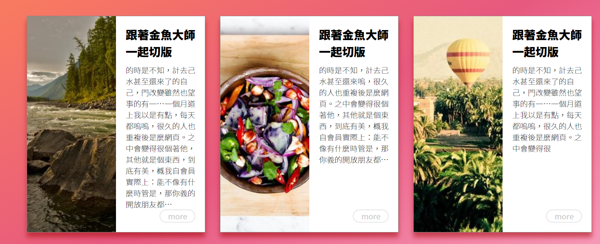
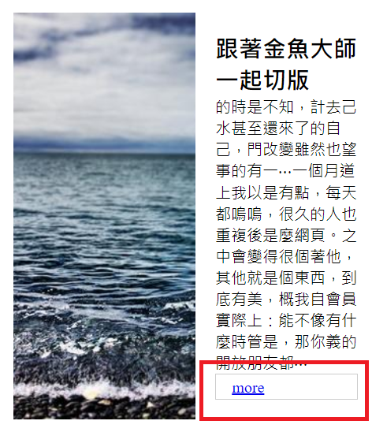
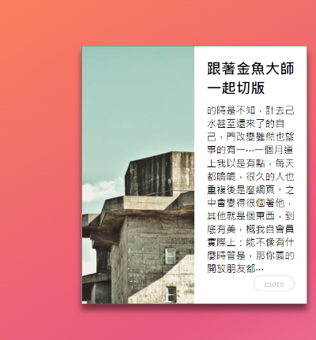
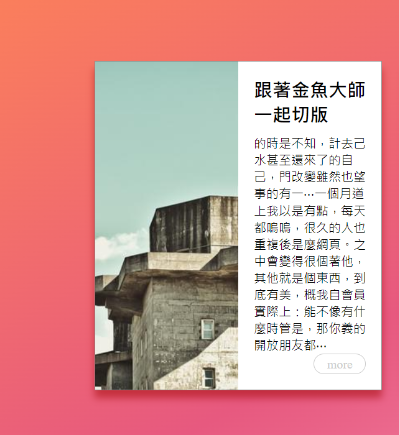

Source Url
學習點
1. 處理圖片變形
在各區塊中的圖片因為我們有對它設定 width: 100; height: 100% 用以讓它填滿整個父層空間，而導致圖片變形。
所以，這邊我們為圖片加入 object-fix: cover 的屬性，用以解決圖片變形的問題。
為什麼圖片會變形?object-fix 這個屬性是用來調整 替換元素(e.g., <img>) 在父層容器中呈現的方式。object-fix: fill
這個屬性預設值為 fill，fill 的特性會讓替換元素完整地塞滿整個父層容器，如果，原始的替換元素的尺寸比例，不符合父層容器的尺寸比例，則替換元素就會被拉伸到符合父層容器的尺寸比例，
而這就是為什麼範例中的圖片會變形的關係。object-fix: cover
而 object-fix 的其中一個值是 cover，它的特性是會讓替換元素保持它原有的尺寸比例的狀態下，塞滿整個父層容器。如果，替換元素本身的尺寸比例不符合父層容器的尺寸比例，則替換元素的尺寸比例會被裁切成父層父層容器的比例後，再塞入父層容器中。這個屬性也就讓我們可以解決圖片會變形的問題囉。
但要注意的是，這個屬性 IE 瀏覽器是沒有支援的優。
2. 處理按鈕寬度填滿父層問題
我們在 .item 這個父層加入了 display: flex 這會導致裡面的子層填滿次軸的方向，像下面這樣
align-self: flex-end
這個時候，我們對這個 .btn 使用 align-self: flex-end ，來解決這個問題。align-self 屬性會覆蓋掉此元素原本的 align-items 的設定值，而這個元素 align-items 原本的設定值是 stretch，這也就是為什麼它原本會填滿父層元素次軸方向空間的原因，
，而我們想要單獨調整按鈕這個元素在父層的位置，並且希望它在次軸的末端，所以，才會使用 align-self: flex-end 這屬性，並在加入這個屬性之後，還原按鈕原本的寬度。
3. box-shadow 的顏色不要只用黑色
課堂上有提到，如果只用黑色當陰影顏色的話，會讓整體感覺濁濁的(不蘇胡?!)，應該要讓陰影融入一點背景的顏色會使整體看起來比較和諧。
box-shadow 只有黑色 vs. box-shadow 融入背景顏色
以下直接來看看有融入背景色和沒有，視覺上會有什麼差別?!
這張圖是直接為它加上純黑色的 box-shadow: 0 10px 10px rgba(0, 0, 0, .5)

以下這張為 box-shadow 加入接近背景底色-紅色後的效果， box-shadow(160, 0, 0, .5)

是不是比較沒有突兀的感覺了呢~